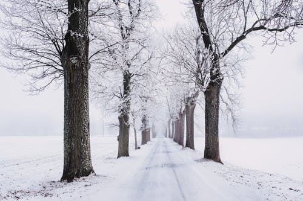

Current Weather Story

Reported by Weather Channel: After dumping inches – feet, in some areas – of snow in two waves, Winter Storm Lucian finally left the West on Wednesday. But it pivoted into the Midwest, where it was doling out a second punch of wintry weather to areas that already saw snow and ice days earlier. The winter storm has been blamed for three deaths – two in Missouri and one in Kansas. In Michigan, freezing rain knocked down trees and power lines, leaving more than 50,000 people without power. School districts canceled classes as far west as Salt Lake City and Flagstaff, Arizona, and as far east as Detroit on Wednesday, a testament to how far-reaching the storm's impacts were. Officials urged drivers to slow down and be extremely careful when traveling on roads slickened by Lucian's snow and ice. The storm also hit the Northwest hard Sunday and Monday, leaving unusually large snow accumulations in the Seattle area. Roads were slippery and dangerous, and police reported dozens of spinouts and crashes on Monday.